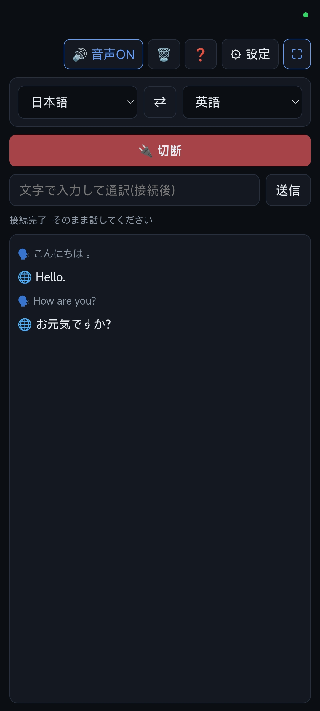

🌐 同時通訳
マイクに話しかけるだけで、選んだ2つの言語を相互に通訳するWebアプリです。

できること
- 約70言語から2つを選び、相互に通訳します(例: 日本語 ⇄ 英語)。どちらの言語で話しても、もう一方の言語に訳されます。
- 通訳結果は会話ウインドウに文字で表示されます。「音声」ボタンをONにすると、通訳の音声も再生されます。
- 接続ボタンの下の入力欄から、文字を入力して通訳することもできます。
- 通訳に使うAIは、Gemini・ChatGPT・OpenRouterから選べます。
使い方
- 右上の「⚙ 設定」を開き、API提供元を選んでAPIキーを入力します。
- 「接続テスト」でキーが有効か確認します。モデルIDを空欄でテストすると、使えるモデルの一覧が出るので、そこから選べます。
- 画面上部で通訳したい2つの言語を選びます(⇄で入れ替えできます)。
- 「🎙️ 接続」を押し、マイクの使用を許可します。
- 「接続完了」と出たら、そのまま話してください。
- 終了するときは「🔌 切断」を押します。
言語を変えたときは、Gemini・ChatGPTでは次回の接続から反映されます。OpenRouterではすぐに反映されます。
3つの提供元の違い
| Gemini | ChatGPT | OpenRouter | |
|---|---|---|---|
| 方式 | Live API(リアルタイム) | Realtime API(リアルタイム) | 話し終わりごとに音声を送信 |
| 遅延 | 小さい | 小さい | やや大きい(約0.8秒の無音で区切るため) |
| 原文の文字起こし | あり | あり | なし(「音声を送信」と表示) |
| モデル | Live API対応モデル | Realtime対応モデル | 音声入力に対応した任意のモデル |
| キー取得先 | Google AI Studio | OpenAI Platform | OpenRouter |
OpenRouterで音声ONにしても、モデルが音声出力に対応していない場合は、自動で文字のみの通訳になります。
上手に使うコツ
- イヤホンの使用をおすすめします。スピーカーの音をマイクが拾うと、ハウリングや誤反応が起きます。
- Androidでは、通訳音声の再生中はマイク入力を一時的に止めて、エコーを防いでいます。
- 通訳音声の途中で話し始めると、再生は中断されます。
- 静かな場所のほうが、聞き取りの精度が上がります。
プライバシーと注意
- APIキー・モデルID・言語選択は、この端末のブラウザ内(localStorage)にだけ保存されます。
- 音声と文字は、選んだ提供元(Google / OpenAI / OpenRouter)への通信にだけ使われ、このアプリの運営者のサーバーには送られません。
- ブラウザから直接APIに接続するため、キーの取り扱いにご注意ください。共有のパソコンでは、使用後に設定画面の「キーを消去」を押してください。
- API利用料は、ご自身のアカウントに請求されます。